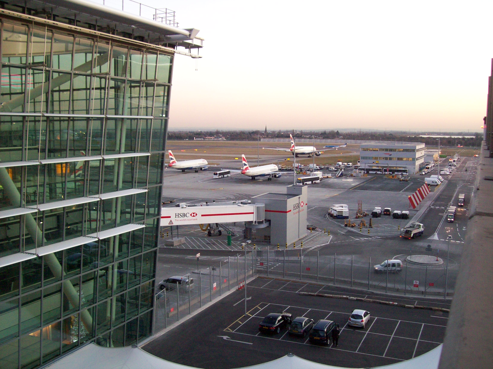
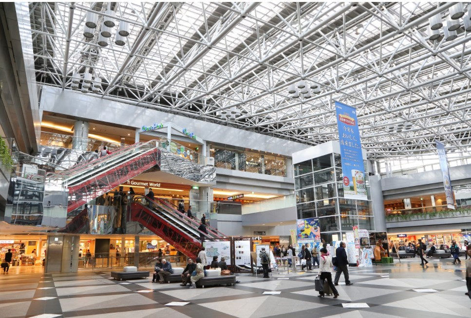

El nuevo aeropuerto de Chitose (CTS) se encuentra en el suroeste de Hokkaido, cerca de Sapporo y las populares estaciones de esquí de Niseko y Rusutsu. Este moderno y compacto aeropuerto es la principal conexión entre Hokkaido y el resto de Japón, y tiene vuelos diarios desde la mayoría de las principales ciudades del país. También hay vuelos directos desde Shanghái, Seúl y otras ciudades asiáticas. Las terminales nacionales e internacionales están conectadas por zonas comerciales cubiertas. El aeropuerto cuenta con servicios directos de tren y autobús que tardan aproximadamente 40 minutos en llegar a Sapporo y servicios de autobús exclusivos hasta las estaciones de esquí cercanas.
Aeropuerto Chitose
GUÍA del PASAJERO
Historia Aeropuerto Chitose de Tokio
El aeropuerto fue inaugurado en el año 1991 en reemplazo del Aeropuerto de Chitose (hoy Base Aérea de la Fuerza Aérea de Autodefensa de Japón). Su código IATA era originariamente SPK, pero desde su inauguración, fue adoptado como código de ciudad, incluyendo al Aeropuerto de New Chitose y al pequeño Aeropuerto de Okadama en el centro de Sapporo. El Nuevo Aeropuerto Internacional de Chitose fue el primero en operar las 24 horas desde 1994. Durante los años 1990, se convirtió en una de las principales puertas de entrada a Japón, y comenzó a expandir los vuelos regulares a Europa y Oceanía. Actualmente, los vuelos a Europa han sido interrumpidos y los vuelos internacionales se limitan al Este Asiático y Australia, especialmente en viajes turísticos. El 24 de julio de 1999, el vuelo 61 de All Nippon Airways, en ruta desde el Aeropuerto Internacional de Tokio al Nuevo Aeropuerto de Chitose, fue secuestrado poco después del despegue. El secuestrador mató al piloto antes de que lo sometieran, pero finalmente el Boeing 747 aterrizó correctamente.
Localización
El Aeroupuerto Internacional Chitose se localiza eal sur-sureste de Chitose y Tomakomai , Hokkaidō , Japón
Mapa Aeropuerto Internacional de Chitose
Terminales
Terminal
New Chitose cuenta con solo 1 terminal para vuelos domésticos y terminal 2 para vuelos internacionales.
Transporte
- Autobús: La línea de autobús Chuo cuenta con servicios hasta el centro de Sapporo que salen desde el exterior de la zona de llegadas de la terminal de vuelos nacionales. También hay autobuses hacia otros destinos como Obihiro, Asahikawa y Noboribetsu Onsen.
- Tren: Japan Rail dispone de servicios directos entre el aeropuerto y la estación de Sapporo con varias salidas cada hora. El trayecto dura menos de 40 minutos.
- Taxi: Todas las terminales tienen paradas de taxi delante de la entrada. En el mostrador de información del vestíbulo de llegadas puedes reservar un taxi turístico o de gran tamaño.
Ubicacion de Servicios
Restaurantes
En la terminal de vuelos nacionales podrás encontrar el restaurante Ajisai, que sirve ramen vegetariano y platos sin carne de cerdo —aunque no cuenta con el certificado halal— y el Mir Lounge, un restaurante de pasta donde se sirven pizzas y platos de pasta vegetarianos.
Alojamiento
Además del Air Terminal Hotel, que tiene conexión directa con la terminal de vuelos nacionales, también hay numerosos hoteles de precios razonables a los que podrás llegar en menos de 10 minutos tomando un autobús gratuito desde el aeropuerto.
Cambio de dinero/Cajero automatico
Todas las terminales disponen de varios establecimientos de cambio de divisas Travelex antes y después de pasar el control de pasaportes. También hay varios cajeros automáticos de Seven Bank, Lawson Bank y JP Bank en todas las terminales, en los que se pueden retirar yenes japoneses con tarjetas extranjeras.
Instalaciones
Este aeropuerto dispone también de salas de oración, zonas de fumadores y áreas de recreación infantiles. Acércate a los mostradores de información si necesitas una silla de ruedas para desplazarte en el interior del aeropuerto o, simplemente, alguna indicación para llegar a tu destino. Para más información sobre sus instalaciones y servicios, puedes consultar el sitio web del nuevo aeropuerto de Chitose .